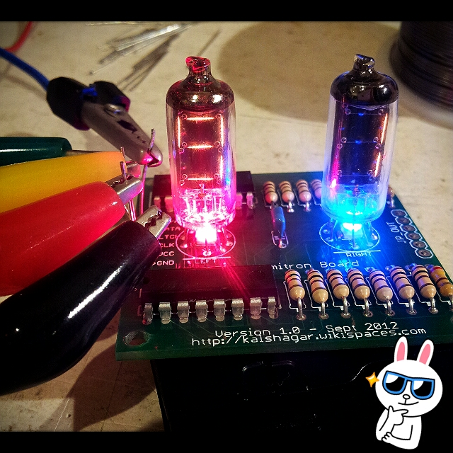
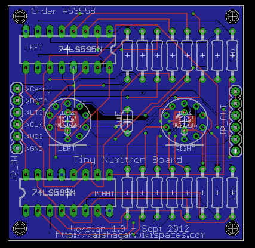
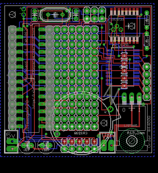

This project is at cross point of a few other projects of mine. It's using a Wordclock board, because it's the easiest solution to manage the time keeping part, it's using Nixie tubes IV16 to show the time, Tiny Numitron boards to show the time (2 times 2 tubes for hour and minutes), 74HC595 Shift registers to drive the tubes (5 volts and they are 7 segments).
This project is at cross point of a few other projects of mine. It's using a Wordclock board, because it's the easiest solution to manage the time keeping part, it's using Nixie tubes IV16 to show the time, Tiny Numitron boards to show the time (2 times 2 tubes for hour and minutes), 74HC595 Shift registers to drive the tubes (5 volts and they are 7 segments).The final design is not bad to my idea and thoses tubes, although not as cool as the Nixie tubes, add a quite nice touch with their glass envelope.
Code
- All based on my Wordclock project (Arduino 1.0 code)
- Google SVN http://code.google.com/p/alanarduinotools/source/browse/trunk/#trunk%2FWordclock
- Special version Alan (serial #0001) code tag
- Special version Francois (serial #0002) code tag
Special instructions
- Wiring :
- Wire the bottom connector middle 3 pins [PB0 - PD7 - PD6] to [DATA - LTCH - CLK]
- Carry pin can stay unwired
Board and schematics
- Eagle http://code.google.com/p/alanarduinotools/source/browse/trunk/#trunk%2Feagle%2FTinyNumitronBoard
|  2 nixie tubes on a Tiny Numitron board |
 The Tiny numitron board schema |
 The wordclock board |
During the tests ...